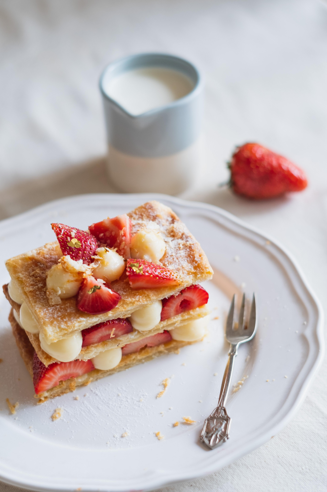

Strawberry Pastry
Simple and Stunning recipes are always a hit! All you need is a
handful of ingredients for fast and fresh Strawberry Pastry.

Ingredients
-
1 sheet puff pastry (half of a 17.3-ounce package), thawed
-
1/4 cup cream cheese, at room temp
-
1 Tablespoon strawberry jam
-
1-1/2 cups sliced strawberries
-
1 large egg
-
Sanding sugar, for topping (optional)
Method
-
1
Pre-heat the oven to 400ºF. Line a baking sheet with parchment
paper or a Silpat.
-
2
Cut the puff pastry into six rectangles by following the
perforations in the dough to first cut the sheet into three
long rectangles and then cut each rectangle in half to form
two smaller rectangles. Transfer the pastries onto the baking
sheet, arranging them at least 1 inch apart.
-
3
Lightly score the dough by cutting a border 1/2-inch from the
edges (do not cut through the pastry). Prick the center of the
pastry several times with a fork.
-
4
In a small bowl, stir together the cream cheese and strawberry
jam. Place a dollop of the cream cheese mixture in the centers
of each pastry and spread it within the scored area. Top the
cream cheese with the sliced strawberries.
-
5
Whisk together the egg with 1 Tablespoon water. Brush the
edges of the pastry with the eggwash then sprinkle them with
sanding sugar (optional).
-
6
Bake the pastries for 15 to 17 minutes until golden and
puffed.
-
7
Remove the pastries from the oven oven and serve.